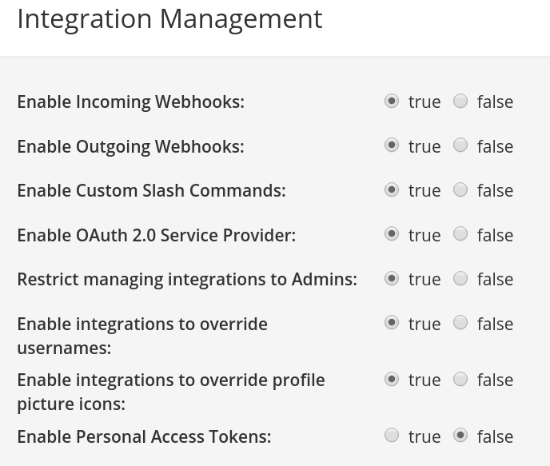
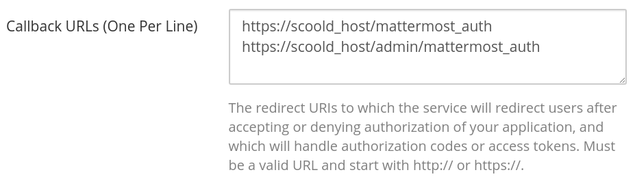
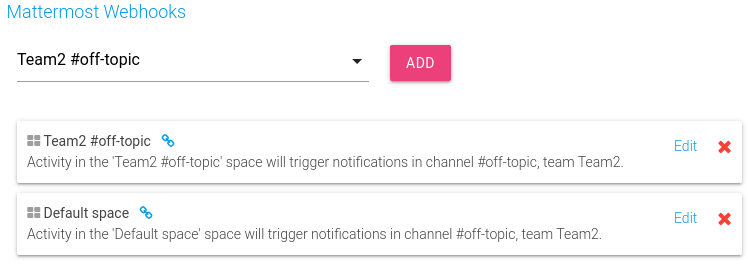

Create questions and answers instantly
Asking a question on Mattermost is as easy as writing /scoold ask How do I...?
To answer, simply type in /scoold answer [question URL] Here's my answer...
You can also turn any chat message into a Scoold question or answer by using the special message actions.

Full editing capability
You can compose a new question by typing in the /scoold ask. Similarly,
to compose a new answer, type in /scoold answer Thus, you can write longer pieces of
text, choose the exact title and tags you want your question to have.
Search for questions, people or tags
You can perform advanced search queries from any Mattermost channel using the commands
/scoold search, /scoold search-people and /scoold search-tags.
Real-time notifications
Your linked channels will be instantly notified whenever a new question or answer is created on Scoold. Mentions of people in chat are sent to the channel even if the person is mentioned at a later revision of the post. To mention someone from Mattermost, simply link to their Scoold profile in your post.
Approve questions and answers without leaving the channel
This is a handy feature for moderators who wish to keep an eye on new posts on Scoold. If new posts require explicit approval from mods, Scoold will notify the chat by presenting the option to "Approve" or "Delete" the newly created post.
€299 per host, one-time fee, basic support included
The integration with Mattermost is a premium feature, only available in Scoold Pro.
Getting started
-
You'll need a copy of Scoold Pro before continuing.
1. From the System Console, enable OAuth 2.0 Service Provider. Then, create a new trusted Mattermost OAuth 2.0 application from the Integrations section and copy the Client ID and Client Secret to your application.conf:para.mm_app_id = "{Client ID}" para.mm_secret = "{Client Secret}" -
2. From the System Console, enable Incoming Webhooks, integrations to override usernames,
integrations to override profile picture icons and click "Save changes".
 -
3. Whitelist the following redirect (callback) URLs in your OAuth 2.0 application settings:
 -
4. Visit the "Administration" page in Scoold and click the "Add to Mattermost" button.
This will authorize Scoold to call the Mattermost API. Then add a notification webhook for each channel
that you wan to receive notifications from Scoold. Repeat this step for up to 10 channels.
 - 5. You're all set! Restart Scoold and it should be fully integrated with your Mattermost workspace.
Check the README for more information.